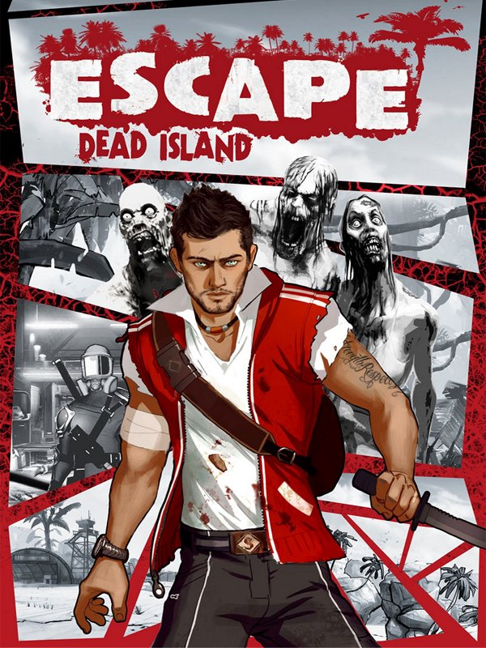

Escape Dead Island
Escape Dead Island
Details
|  | |
| Playtime | 10h 38m 0s |
| Last Activity | 05.11.2019 23:49:42 |
| Added | 14.4.2021 19:48:46 |
| Modified | 25.4.2021 21:17:25 |
| Completion Status | Played |
| Source | Steam |
| Platform | PC |
| Release Date | 20.11.2014 |
| Community Score | 59 |
| Critic Score | 52 |
| User Score | |
| Genre | Adventure |
| Developer | Fatshark |
| Publisher | Deep Silver |
| Feature | Achievements Full Controller Support Remote Play On TV Single-Player Trading Cards |
| Links | Community Hub Discussions Guides News Store Page PCGamingWiki Achievements |
Description

Escape Dead Island is a Survival-Mystery game set on the enigmatic island of Narapela after the events of the zombie outbreak of the original Dead Island. The story lets players unravel the origins of the zombie virus through the eyes of the would-be documentary journalist Cliff Calo. There are no superpowers to keep Cliff alive, just a few makeshift weapons against hordes of infected zombies. It will be integral to choosing wisely between stealth and combat at certain moments in the game.

Cliff Calo, son of wealthy media mogul Tom Calo, led a care-free life with little regard for the family business. However, when his father decides to hand over the company to his younger sister Heather, Cliff feels insulted and excluded. Knowing that his father desperately seeks an insight on the unexplained events on Banoi for his broadcasting channels, Cliff and his friends set sail to land the story that will prove his worth.

Being a top graduate and highly skilled in martial arts, Xian Mei was the first female recruit to join the People’s Liberation Army as part of their domestic crime squadron. She was sent undercover to the Royal Palms Resort on the Island of Banoi as part of a secret mission. Then the zombie outbreak happened and soon after she was spotted at neighbouring island Narapela…

The Island of Narapela is part of the Banoi Archipelago and located only a few miles from Banoi. Narapela is both a place and an adversary that jealously guards its secrets. As Cliff ventures deeper into the island, his adventure begins to become more and more distorted and unpredictable. Tear through a world that reacts to your every move and collect every clue you can: somewhere amid the madness lies the truth behind Dead Island’s apocalyptic outbreak.
Game Features
- Unravel the origins of the zombie outbreak
- Experience an immersive, story-driven Survival-Mystery adventure
- Find and use specific tools to your advantage to enter new areas of the island
- Fight off zombies and kill them in unique ways with a vast array of weapons
- Discover the secrets of the Dead Island universe
- The missing link between previous Dead Island games and the upcoming Dead Island 2